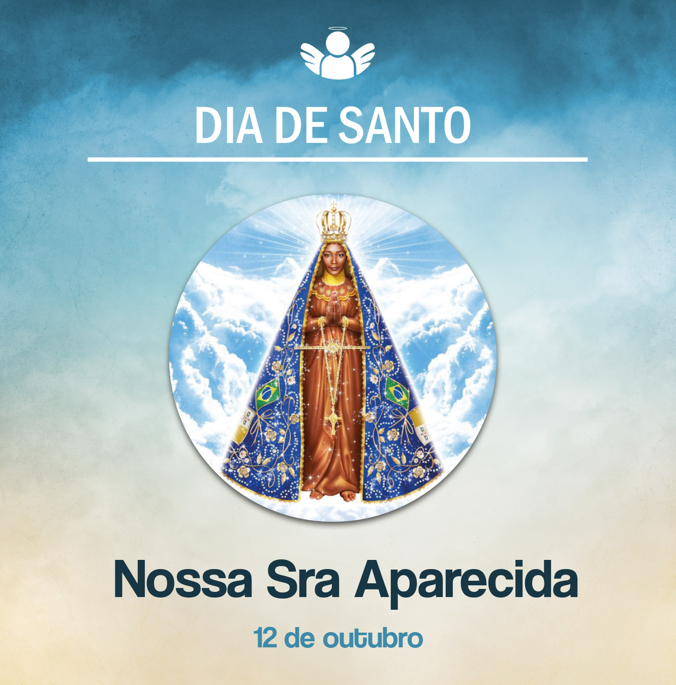

Nossa Senhora Aparecida
12 de outubro de, 2020
Hoje celebramos a solenidade de Nossa Senhora Aparecida. Vamos recordar um pouco de sua história. Conta-se que, no ano de 1717, o Conde d’Assumar, Dom Pedro de Almeida, governador das Províncias de Minas Gerais e São Paulo, passaria pela região de Guaratinguetá. Então os pescadores João Alves, Felipe Pedroso e Domingo Garcia foram incumbidos de levar peixe para o banquete. No Rio Paraíba do Sul, lançaram a rede por várias vezes, mas nada conseguiram.
Já estavam exaustos pelo trabalho, mas, como deveriam conseguir peixes, ainda jogaram as redes mais uma vez. Então um deles apanhou um pedaço de objeto. Ao lançar novamente a rede, veio outra parte. Verificaram que aquelas peças, juntas, formavam uma imagem de Nossa Senhora da Conceição. Continuaram tentando após acharem a imagem, e as redes vieram repletas de peixes. Assim, felizes pela fartura da pesca e aliviados, puderam levar a encomenda para o banquete.
A pequena imagem foi colada com cera e mantida na casa de Felipe Pedroso, que a guardou até 1732. Depois ele a entregou ao filho, Atanásio Pedroso, que lhe construiu um oratório. A imagem permaneceu com ele até 1743. O povo do lugar se reunia junto a esse oratório para a récita do terço e agradecer as graças alcançadas.
Mais tarde, construíram uma capela maior, no lugar onde hoje está a Basílica Velha. Esta foi inaugurada solenemente em 8 de dezembro de 1888. No dia 28 de outubro de 1894, chegaram a Aparecida os missionários redentoristas para animar a missão na Basílica.
As graças de Deus alcançadas por Maria começaram a se espalhar e, em 8 de setembro de 1904, a imagem recebeu solenemente um manto e a coroa, joia doada pela Princesa Isabel. Nesse dia, participaram diversas autoridades religiosas, civis e uma multidão de peregrinos.
Em 16 de julho de 1930, ao fim do Congresso Mariano, Nossa Senhora foi proclamada Rainha do Brasil. Nessa data, também foi declarada a padroeira principal do País, por decreto do Papa Pio XI.
A Basílica Nova, uma das maiores igrejas do mundo, começou a ser construída em 1955, sendo consagrada pelo Papa João Paulo II em 4 de julho de 1980, quando de sua histórica visita ao Brasil. Em 1983, a CNBB declarou oficialmente a Basílica de Aparecida como Santuário Nacional.
Em maio de 2007, o Papa Bento XVI também esteve no santuário para abrir a Conferência Episcopal Latino-Americana e do Caribe. O resultado desse histórico evento foi o “Documento de Aparecida”, que orienta as ações da Igreja em nosso continente.
O Papa Francisco foi outro Pontífice a peregrinar a Aparecida. Ele esteve no santuário durante a Jornada Mundial da Juventude, realizada no Rio de Janeiro, em 2013. As obras internas da Basílica foram entregues em 2016 para as celebrações da festa dos 300 anos do aparecimento da imagem de Nossa Senhora nas águas do Paraíba do Sul, comemorados em 12 de outubro de 2017. Hoje são milhões de romeiros que se dirigem a Aparecida, saindo de várias partes do Brasil e do exterior.
Invocamos a nossa Mãe e, por sua intercessão, peçamos a Deus abundantes bênçãos ao Brasil. Que esta nação consagrada a ela caminhe na fé, na esperança, no amor e na solidariedade.
Nossa Senhora Aparecida, rogai por nós!